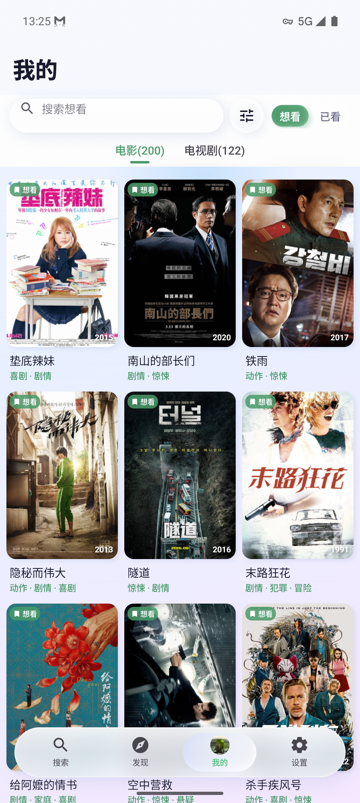
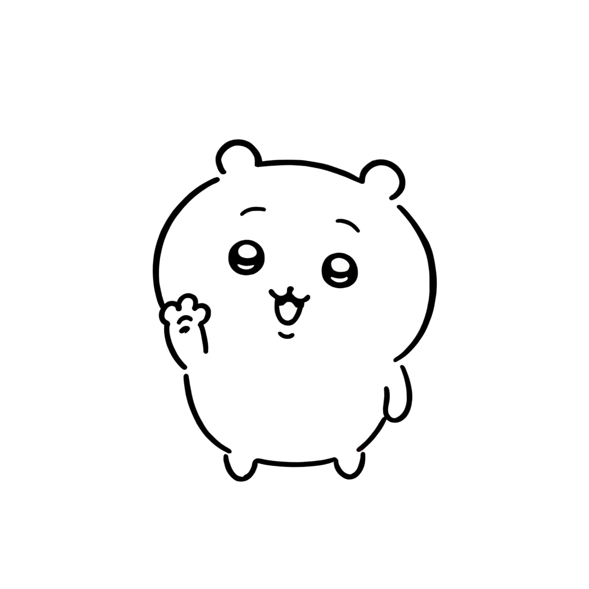
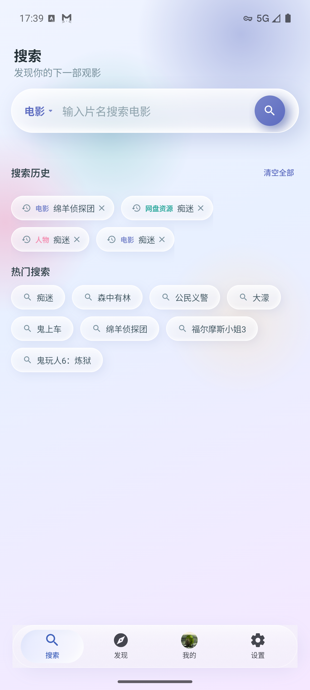
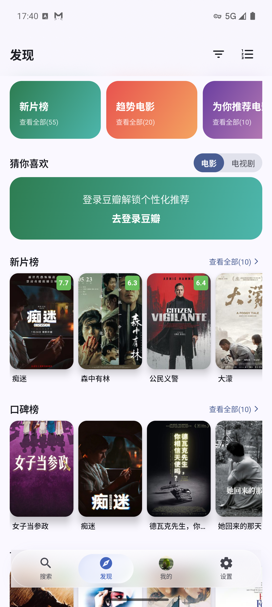
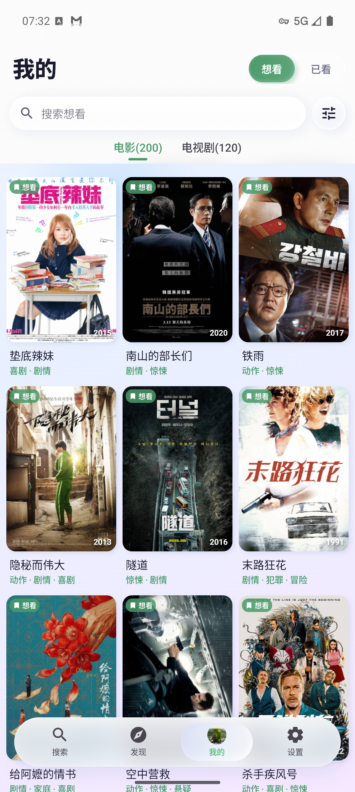
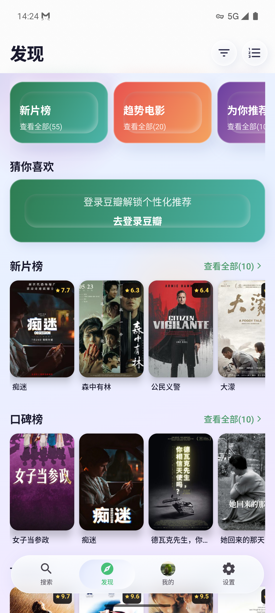

FROM WATCHLIST TO WATCHABLE
01 / 05


下载试试？
01
SEARCH
从片名开始，
少一点来回切换。
直接搜索电影、剧集和人物。多源结果聚合展示，从搜索列表即可进入详情页，不用在多个应用间反复跳转。 片名匹配更准确，找对那部作品，再谈后续的资源与收藏。
- 电影 / 剧集 / 人物 多类型搜索
- 搜索结果直达详情页
- 历史记录与快速补全


02
DISCOVER
把"随便看看"
变成一张有方向的片单。
热门趋势、即将上映、分类浏览都在同一处。按类型、地区、评分、年代筛选， 从"不知道看什么"到"今晚就看这部"，路径更短。
- 热门趋势 / 即将上映 / 分类浏览
- 按类型、地区、评分、年代筛选
- 发现后可直接加入清单或搜索资源
03
LIBRARY
收藏不是终点，
下一次打开时还找得到。
Trakt 双向同步，想看 / 已看清晰分区。观影数据自动统计，从资源页一键关联到清单条目， 收藏过的作品不会在下次想翻出来时消失在信息洪流里。
- Trakt 双向同步，想看 / 已看分离
- 观影数据统计与回顾
- 资源页自动关联清单条目


04
DETAIL
在决定播放之前，
把这部作品看明白。
TMDB、OMDb、豆瓣评分一屏呈现。季集进度、完整演职员、相关推荐全部就位， 看清一部作品再决定是否播放，减少点进去又退出来的浪费。
- TMDB / OMDb / 豆瓣 多源评分
- 季集进度、完整演职员表
- 相关推荐与相似作品